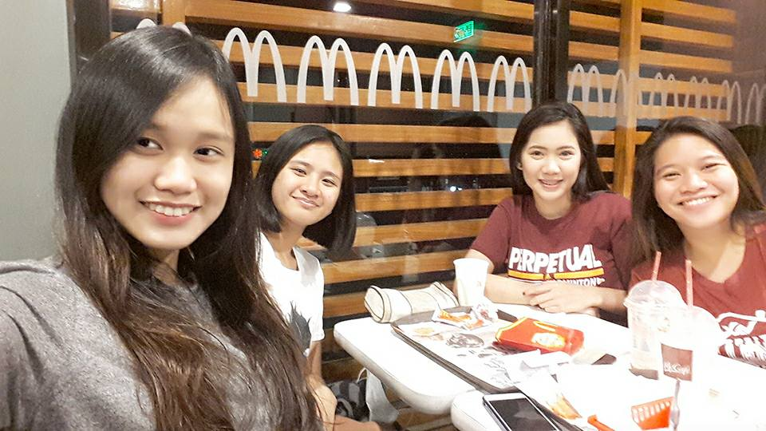
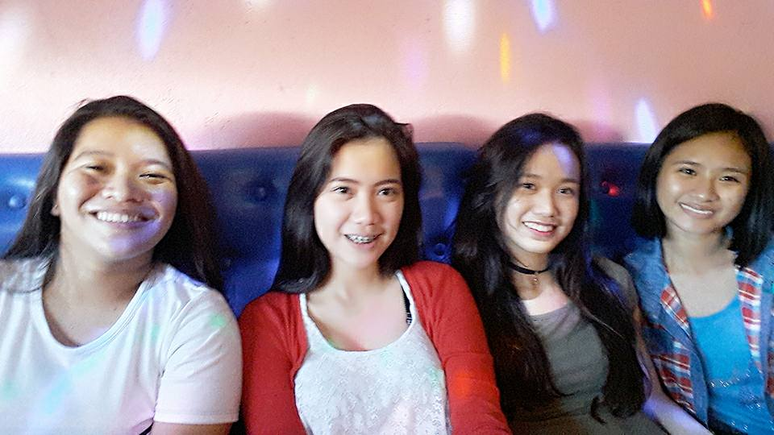
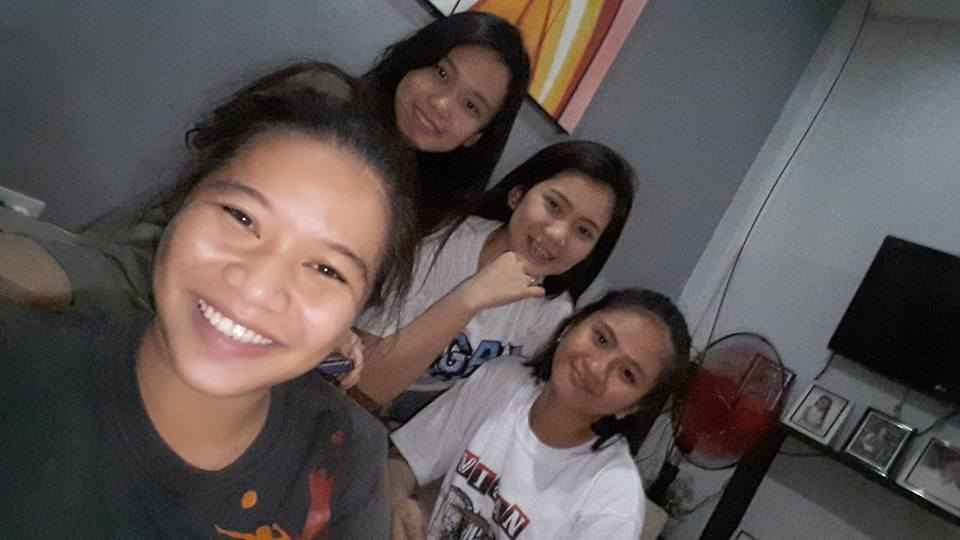
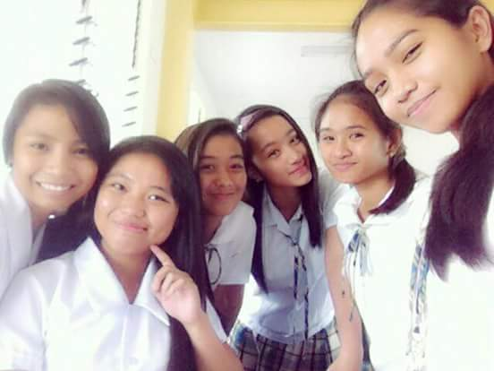
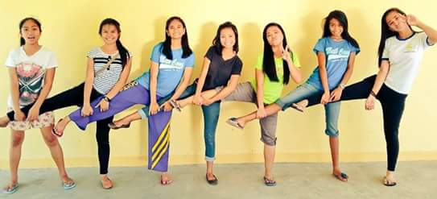
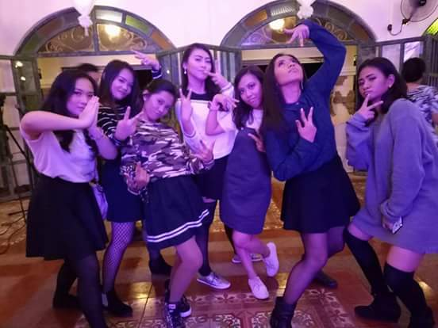
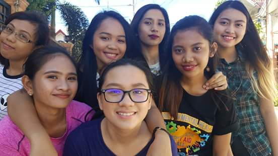
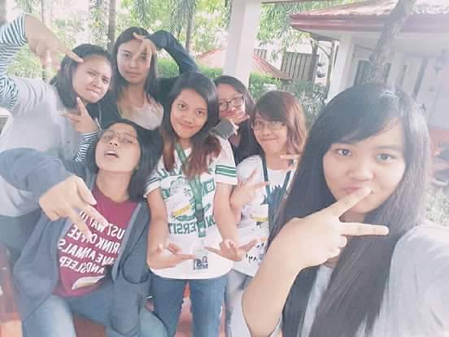

MY SOUL SISTERS
These are my squads from
elementary, high school & college. I consider them as my soul sisters and I value and love them so much.
| A L A N |
|  |
 |
 |
|
These are my main girls. We've been friends for almost
10 years now and we've through a lot together but our friendship still remains.
Our squad was formed when we were in
our 4th grade, we were all transferees during that time,
it's unexpected because we're really opposite from each other but somehow we managed to overcome our differences
and became the best of friends. We call ourselves ALAN because it is the acronym of our first names. Althea,
Lisa, Alleah & Nadine. It wasn't a smooth sailing relationship, we were young and immature back then so we
always fight over petty reasons but at the end of the day, we always reconcile with each other. I treasure them
like my own sisters.
Our bonding is just simple, we hang-out in each
other's house and talk with each other all day, sometimes we play games or watch movies.
Our friendship is low maintennance because even though
we don't talk and see each other for months, we don't lose the friendship and be awkward whenever we see each
other again. As of now, Althea is studying at UPHSD- LP, Lisa is in Japan, Nadine is studying in UP Diliman and
I on DLSU-D.
|
| D K C |
|  |
 |
|
This is my squad from high school. We're composed of seven individuals.
It's called DKC because it was named after our so-called
leader Shay. We were just teasing her about her eyebrows because it's thick
then we formed the name De Leon's Kilay Clan and we started calling
our squad like that since then. We are Lil, Chell, Kath, Tere, Shay, Shai and me. Tere only joined on the latter
part of the school year because she got close to Kath and Shaira then she also got close to the rest of us.
Our bonding is also just a simple one. We just roam around the different
baranggays in Area C where our school is located and we go to our other classmates' house. Sometimes we also
watch movies and sleepover Kath's house. There are also times when we were in school that we would ask one of our classmates
to take a video of us dancing and playing while a certain song is playing. We also have a signature pose, I don't know what it's
called but it's what we did in the picture on the right. It's actually the first and last time that we were able to pose like that
as a complete group.
As of now, we haven't seen Shaira and Tere since graduation because they're both working while the rest
of us are studying. The five of us still hang-out whenever we have free time since our houses are only close to each other.
|
| U N O |
|  |
 |
 |
| This is my college squad. I never thought that these girls
would be my closest friends because I didn't think we would really click but guess what? We did.
We call ourselves UNO because
we became closer because of the card game, UNO. It was formed when we were in our first year in college.
We became a group in aerobics in PE class and that's where our friendship started. We are Bernades, Danie, Elai, Ina,
Hanna and Zelina.
Even though we don't have a lot
in common, we still became very close with each other. Some of us are shy and some of us are loud. Some of us are a fan of kpop and some
aren't but we still managed to settle our differences.
With this squad, our bonding is a mixture of simple and a well
prepared bonding. When it's not planned, we usually end up in the place of Elai. When our bond is planned,
sometimes we would prepare potluck dishes and have a picnic somewhere in Tagaytay or Laguna and many other bonds.
We also have this signature pose called the "jeje pose" and
we take a picture of ourselves doing this whenever we bond or atleast once every sem.
Now, we are the only complete squad from our original block and we plan to keep it that way until we
graduate. We help each other by sharing our skills and abilities in order to pass our subjects. We cheer each other up and
keep each other motivated because we believe that it's what friends do.
|
Back to top
Go to Main Page